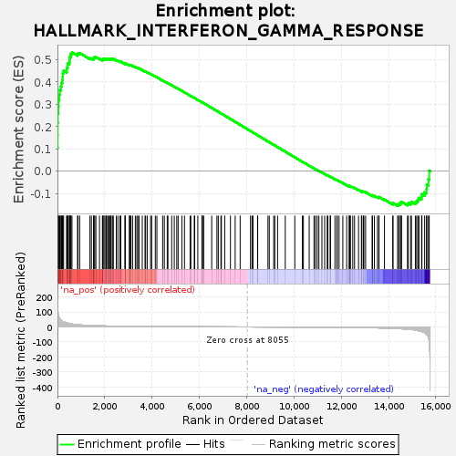
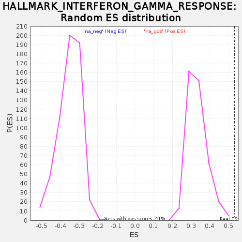

| | | Dataset | DiseaseStatus_ctr_vs_case |
| Phenotype | NoPhenotypeAvailable |
| Upregulated in class | na_pos |
| GeneSet | HALLMARK_INTERFERON_GAMMA_RESPONSE |
| Enrichment Score (ES) | 0.5333049 |
| Normalized Enrichment Score (NES) | 1.5995154 |
| Nominal p-value | 0.0 |
| FDR q-value | 0.0209867 |
| FWER p-Value | 0.098 |
Table: GSEA Results Summary

Fig 1: Enrichment plot: HALLMARK_INTERFERON_GAMMA_RESPONSE
Profile of the Running ES Score & Positions of GeneSet Members on the Rank Ordered List
| SYMBOL | RANK IN GENE LIST | RANK METRIC SCORE | RUNNING ES | CORE ENRICHMENT | | 1 | CXCL10 | 0 | 254.423 | 0.1050 | Yes |
| 2 | TXNIP | 8 | 137.961 | 0.1615 | Yes |
| 3 | IFI44 | 10 | 135.079 | 0.2172 | Yes |
| 4 | SECTM1 | 16 | 104.074 | 0.2598 | Yes |
| 5 | GBP4 | 38 | 76.717 | 0.2901 | Yes |
| 6 | PIM1 | 47 | 74.064 | 0.3202 | Yes |
| 7 | PSMB2 | 79 | 60.391 | 0.3431 | Yes |
| 8 | NMI | 99 | 54.327 | 0.3643 | Yes |
| 9 | GBP6 | 144 | 46.307 | 0.3806 | Yes |
| 10 | FAS | 171 | 41.730 | 0.3962 | Yes |
| 11 | PARP14 | 203 | 38.583 | 0.4101 | Yes |
| 12 | IRF1 | 219 | 37.495 | 0.4246 | Yes |
| 13 | CIITA | 224 | 36.923 | 0.4396 | Yes |
| 14 | PSMA3 | 259 | 34.014 | 0.4514 | Yes |
| 15 | IFIT3 | 392 | 26.621 | 0.4540 | Yes |
| 16 | ISG20 | 395 | 26.541 | 0.4648 | Yes |
| 17 | TNFAIP3 | 433 | 25.087 | 0.4728 | Yes |
| 18 | HERC6 | 434 | 25.064 | 0.4831 | Yes |
| 19 | RTP4 | 501 | 22.485 | 0.4882 | Yes |
| 20 | SSPN | 515 | 22.072 | 0.4964 | Yes |
| 21 | ZNFX1 | 517 | 22.043 | 0.5055 | Yes |
| 22 | PSMA2 | 525 | 21.758 | 0.5140 | Yes |
| 23 | IFIT1 | 564 | 20.492 | 0.5200 | Yes |
| 24 | SAMD9L | 571 | 20.336 | 0.5280 | Yes |
| 25 | TRAFD1 | 614 | 19.331 | 0.5333 | Yes |
| 26 | TRIM14 | 850 | 14.791 | 0.5243 | No |
| 27 | LCP2 | 866 | 14.623 | 0.5294 | No |
| 28 | CASP3 | 941 | 13.509 | 0.5302 | No |
| 29 | FGL2 | 1374 | 9.450 | 0.5064 | No |
| 30 | CFH | 1435 | 9.046 | 0.5063 | No |
| 31 | IRF8 | 1526 | 8.538 | 0.5040 | No |
| 32 | PARP12 | 1530 | 8.529 | 0.5074 | No |
| 33 | IFIH1 | 1540 | 8.479 | 0.5103 | No |
| 34 | ADAR | 1577 | 8.297 | 0.5114 | No |
| 35 | CCL7 | 1625 | 8.096 | 0.5117 | No |
| 36 | IFI35 | 1777 | 7.390 | 0.5051 | No |
| 37 | RSAD2 | 1901 | 6.885 | 0.5000 | No |
| 38 | HLA-DMA | 1920 | 6.839 | 0.5017 | No |
| 39 | CXCL9 | 1922 | 6.827 | 0.5045 | No |
| 40 | PSME2 | 1967 | 6.635 | 0.5044 | No |
| 41 | DDX60 | 2010 | 6.510 | 0.5044 | No |
| 42 | MVP | 2063 | 6.307 | 0.5036 | No |
| 43 | CSF2RB | 2081 | 6.220 | 0.5051 | No |
| 44 | LAP3 | 2132 | 6.062 | 0.5044 | No |
| 45 | TRIM25 | 2171 | 5.926 | 0.5044 | No |
| 46 | SP110 | 2224 | 5.752 | 0.5034 | No |
| 47 | SAMHD1 | 2248 | 5.688 | 0.5043 | No |
| 48 | NFKBIA | 2275 | 5.621 | 0.5050 | No |
| 49 | NFKB1 | 2341 | 5.410 | 0.5030 | No |
| 50 | CD74 | 2361 | 5.369 | 0.5040 | No |
| 51 | NUP93 | 2488 | 5.105 | 0.4980 | No |
| 52 | PELI1 | 2555 | 4.920 | 0.4958 | No |
| 53 | AUTS2 | 2641 | 4.708 | 0.4923 | No |
| 54 | TRIM26 | 2681 | 4.618 | 0.4917 | No |
| 55 | STAT4 | 2861 | 4.191 | 0.4820 | No |
| 56 | CCL2 | 2862 | 4.190 | 0.4837 | No |
| 57 | CD86 | 2864 | 4.187 | 0.4854 | No |
| 58 | CD274 | 3043 | 3.821 | 0.4755 | No |
| 59 | OGFR | 3048 | 3.804 | 0.4768 | No |
| 60 | CASP8 | 3081 | 3.737 | 0.4763 | No |
| 61 | XAF1 | 3107 | 3.704 | 0.4762 | No |
| 62 | MX1 | 3177 | 3.559 | 0.4733 | No |
| 63 | IL15RA | 3293 | 3.367 | 0.4673 | No |
| 64 | PNPT1 | 3356 | 3.274 | 0.4647 | No |
| 65 | RNF213 | 3397 | 3.207 | 0.4634 | No |
| 66 | IL7 | 3449 | 3.136 | 0.4614 | No |
| 67 | HLA-DQA1 | 3586 | 2.934 | 0.4539 | No |
| 68 | PSMB10 | 3703 | 2.774 | 0.4476 | No |
| 69 | EIF2AK2 | 3729 | 2.744 | 0.4471 | No |
| 70 | NCOA3 | 3795 | 2.641 | 0.4441 | No |
| 71 | MT2A | 3939 | 2.460 | 0.4359 | No |
| 72 | EIF4E3 | 3985 | 2.400 | 0.4340 | No |
| 73 | PNP | 4138 | 2.228 | 0.4252 | No |
| 74 | PML | 4204 | 2.155 | 0.4219 | No |
| 75 | RIPK1 | 4448 | 1.900 | 0.4071 | No |
| 76 | ISG15 | 4519 | 1.822 | 0.4033 | No |
| 77 | ARL4A | 4642 | 1.723 | 0.3962 | No |
| 78 | IFI44L | 4672 | 1.702 | 0.3951 | No |
| 79 | SPPL2A | 4830 | 1.573 | 0.3856 | No |
| 80 | TOR1B | 4939 | 1.474 | 0.3793 | No |
| 81 | NLRC5 | 5045 | 1.389 | 0.3731 | No |
| 82 | IRF2 | 5103 | 1.349 | 0.3700 | No |
| 83 | TNFSF10 | 5260 | 1.242 | 0.3605 | No |
| 84 | MX2 | 5371 | 1.162 | 0.3540 | No |
| 85 | OASL | 5608 | 0.998 | 0.3392 | No |
| 86 | LY6E | 5640 | 0.977 | 0.3376 | No |
| 87 | RAPGEF6 | 5785 | 0.888 | 0.3288 | No |
| 88 | PLA2G4A | 5804 | 0.875 | 0.3280 | No |
| 89 | LYSMD2 | 5935 | 0.803 | 0.3200 | No |
| 90 | TRIM21 | 6110 | 0.718 | 0.3091 | No |
| 91 | USP18 | 6114 | 0.716 | 0.3092 | No |
| 92 | SLC25A28 | 6169 | 0.691 | 0.3060 | No |
| 93 | PSMB8 | 6182 | 0.686 | 0.3055 | No |
| 94 | DDX58 | 6522 | 0.521 | 0.2840 | No |
| 95 | STAT1 | 6743 | 0.431 | 0.2701 | No |
| 96 | RBCK1 | 6801 | 0.407 | 0.2666 | No |
| 97 | RNF31 | 6911 | 0.370 | 0.2597 | No |
| 98 | ZBP1 | 6932 | 0.361 | 0.2586 | No |
| 99 | VAMP8 | 7074 | 0.306 | 0.2497 | No |
| 100 | HLA-B | 7315 | 0.223 | 0.2344 | No |
| 101 | C1S | 7515 | 0.161 | 0.2216 | No |
| 102 | IL18BP | 7725 | 0.092 | 0.2083 | No |
| 103 | BATF2 | 8163 | -0.038 | 0.1802 | No |
| 104 | IRF9 | 8228 | -0.066 | 0.1762 | No |
| 105 | PSME1 | 8267 | -0.082 | 0.1738 | No |
| 106 | APOL6 | 8462 | -0.146 | 0.1614 | No |
| 107 | TNFAIP2 | 8467 | -0.148 | 0.1612 | No |
| 108 | STAT2 | 8901 | -0.312 | 0.1335 | No |
| 109 | CMPK2 | 8957 | -0.338 | 0.1301 | No |
| 110 | IL15 | 9144 | -0.407 | 0.1184 | No |
| 111 | IRF7 | 9190 | -0.428 | 0.1156 | No |
| 112 | NOD1 | 9308 | -0.487 | 0.1083 | No |
| 113 | CD40 | 9632 | -0.627 | 0.0879 | No |
| 114 | IFIT2 | 10036 | -0.846 | 0.0623 | No |
| 115 | IFI27 | 10356 | -1.053 | 0.0423 | No |
| 116 | IRF4 | 10399 | -1.084 | 0.0401 | No |
| 117 | WARS | 10645 | -1.237 | 0.0248 | No |
| 118 | BANK1 | 10848 | -1.395 | 0.0125 | No |
| 119 | C1R | 10907 | -1.445 | 0.0093 | No |
| 120 | UPP1 | 10983 | -1.517 | 0.0051 | No |
| 121 | BST2 | 11055 | -1.597 | 0.0013 | No |
| 122 | HLA-G | 11182 | -1.714 | -0.0061 | No |
| 123 | PTPN1 | 11299 | -1.817 | -0.0128 | No |
| 124 | TDRD7 | 11407 | -1.911 | -0.0189 | No |
| 125 | IFI30 | 11436 | -1.942 | -0.0199 | No |
| 126 | PLSCR1 | 11531 | -2.034 | -0.0251 | No |
| 127 | PSMB9 | 11547 | -2.043 | -0.0252 | No |
| 128 | SOCS1 | 11734 | -2.251 | -0.0362 | No |
| 129 | VAMP5 | 11815 | -2.343 | -0.0404 | No |
| 130 | CMKLR1 | 11829 | -2.361 | -0.0402 | No |
| 131 | PTPN2 | 11907 | -2.467 | -0.0442 | No |
| 132 | MYD88 | 12067 | -2.684 | -0.0533 | No |
| 133 | DHX58 | 12230 | -2.951 | -0.0624 | No |
| 134 | HIF1A | 12339 | -3.139 | -0.0681 | No |
| 135 | LATS2 | 12349 | -3.150 | -0.0674 | No |
| 136 | SRI | 12350 | -3.150 | -0.0661 | No |
| 137 | CASP4 | 12390 | -3.229 | -0.0672 | No |
| 138 | IL10RA | 12487 | -3.429 | -0.0720 | No |
| 139 | UBE2L6 | 12562 | -3.581 | -0.0752 | No |
| 140 | CASP7 | 12731 | -3.920 | -0.0844 | No |
| 141 | SOCS3 | 12852 | -4.182 | -0.0904 | No |
| 142 | B2M | 12873 | -4.230 | -0.0899 | No |
| 143 | IL4R | 12939 | -4.408 | -0.0923 | No |
| 144 | HLA-A | 12958 | -4.461 | -0.0916 | No |
| 145 | NAMPT | 13030 | -4.615 | -0.0942 | No |
| 146 | PTGS2 | 13307 | -5.342 | -0.1097 | No |
| 147 | RIPK2 | 13320 | -5.380 | -0.1083 | No |
| 148 | TAP1 | 13403 | -5.635 | -0.1112 | No |
| 149 | STAT3 | 13530 | -6.072 | -0.1168 | No |
| 150 | IRF5 | 13591 | -6.295 | -0.1181 | No |
| 151 | IFITM2 | 13598 | -6.333 | -0.1158 | No |
| 152 | JAK2 | 13828 | -7.353 | -0.1275 | No |
| 153 | ITGB7 | 14181 | -9.237 | -0.1463 | No |
| 154 | SOD2 | 14189 | -9.317 | -0.1429 | No |
| 155 | ICAM1 | 14381 | -10.695 | -0.1507 | No |
| 156 | CCL5 | 14434 | -11.080 | -0.1495 | No |
| 157 | ST8SIA4 | 14444 | -11.143 | -0.1455 | No |
| 158 | CD38 | 14511 | -11.700 | -0.1449 | No |
| 159 | BPGM | 14515 | -11.764 | -0.1402 | No |
| 160 | EPSTI1 | 14550 | -12.079 | -0.1374 | No |
| 161 | ISOC1 | 14800 | -14.876 | -0.1472 | No |
| 162 | MTHFD2 | 14837 | -15.368 | -0.1432 | No |
| 163 | SLAMF7 | 14936 | -16.837 | -0.1426 | No |
| 164 | TAPBP | 14967 | -17.294 | -0.1373 | No |
| 165 | PTPN6 | 15134 | -20.431 | -0.1396 | No |
| 166 | GCH1 | 15189 | -21.772 | -0.1340 | No |
| 167 | OAS2 | 15242 | -23.665 | -0.1276 | No |
| 168 | ARID5B | 15286 | -25.441 | -0.1199 | No |
| 169 | IFNAR2 | 15398 | -29.624 | -0.1148 | No |
| 170 | BTG1 | 15412 | -30.509 | -0.1030 | No |
| 171 | CASP1 | 15527 | -37.926 | -0.0947 | No |
| 172 | CDKN1A | 15606 | -47.520 | -0.0801 | No |
| 173 | PDE4B | 15617 | -49.598 | -0.0602 | No |
| 174 | ST3GAL5 | 15688 | -69.271 | -0.0361 | No |
| 175 | OAS3 | 15720 | -97.998 | 0.0023 | No |
Table: GSEA details [plain text format]

Fig 2: HALLMARK_INTERFERON_GAMMA_RESPONSE: Random ES distribution
Gene set null distribution of ES for HALLMARK_INTERFERON_GAMMA_RESPONSE